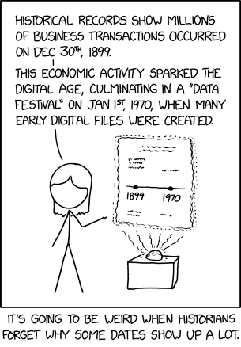
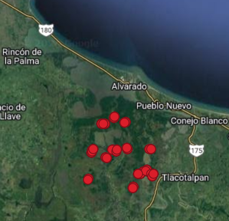

library(skimr) # para echar un ojito a las bases de datos
library(sf) # para trabajo geoespacial con vectoresTarea de análisis crítico
taller

Datasets para ejercicios
Presentamos dos conjuntos de datos reales de monitoreo de variables ambientales, con propósitos ecológicos para ejercitar el pensamiento crítico sobre los resultados del monitoreo, así como las capacidades computacionales. El primer conjunto consiste en dos archivos de variables meteorológicas y el segundo en mediciones de nivel de inundación.
El Ejercicio consiste en reflexionar en torno a la posibilidad o no de cumplir los objetivos de las investigaciones que se propusieron los investigadores en los dos casos que siguen. También les pedimos comentar en torno a la calidad del resultado esperado. Finalmente, esperamos de ustedes un comentario en torno a sugerencias de mejora para atender los propósitos de las investigaciones que se propusieron los especialistas.
El reporte sobre sus reflexiones debe ser un texto sucinto y concreto en no más de dos cuartillas. Adecuadamente organizado como para apreciar rápidamente los aspectos que sugieren personalmente deben ser atendidos y la forma que ustedes proponen para solucionarlos, en caso de que sea necesario. Envíen este documento a mi o a Elio.
Serie temporal de temperatura y humedad relativa
Los datos de esta serie fueron tomados con un termo-higrómetro con registro automático (logger) “Hygrochron Temperature and Humidity Data Logger” de la marca ibuttonlink, en el periodo comprendido entre: 2016-02-08 19:00:00 y 2017-05-31 12:01:00, en la localidad Tapachapa del Municipio Coatepec, Veracruz (lon: -96.98109; lat: 19.45871). Consta de 11,045 registros, en formato csv (comma separated value). El termo-higrómetro fue colocado en un vivero de producción de árboles nativos para restauración de ecosistemas en bosques mesófilos de montaña y bosques templados.
Objetivos del monitoreo
- Tener un registro meteorológico de la temperatura y la humedad relativa, que son de las principales variables ambientales que pueden afectar el crecimiento de las plantas.
- Cubrir el vacío de estaciones meteorológicas en la zona.
Fuente de los datos: Pronatura Veracruz, 2017. CC-by-SA
Descripción de las bases de datos
archivo Gavilanes_Temperatura.csv
| Columna | datatype | Descripción |
|---|---|---|
| Date.Time | datetime | fecha-hora, formato día/mes/año hora:minuto |
| Unit | chr | Unidad, (°C para todo el dataset) |
| Value | dbl | Valor de temperatura leído |
read.csv("https://gitlab.com/datamarindo/datasets/-/raw/master/Gavilanes_Temperatura.csv?inline=false") |> skimr::skim()| Name | read.csv(“https://gitlab…. |
| Number of rows | 11045 |
| Number of columns | 3 |
| _______________________ | |
| Column type frequency: | |
| character | 2 |
| numeric | 1 |
| ________________________ | |
| Group variables | None |
Variable type: character
| skim_variable | n_missing | complete_rate | min | max | empty | n_unique | whitespace |
|---|---|---|---|---|---|---|---|
| Date.Time | 0 | 1 | 16 | 16 | 0 | 11044 | 0 |
| Unit | 0 | 1 | 1 | 1 | 0 | 1 | 0 |
Variable type: numeric
| skim_variable | n_missing | complete_rate | mean | sd | p0 | p25 | p50 | p75 | p100 | hist |
|---|---|---|---|---|---|---|---|---|---|---|
| Value | 0 | 1 | 20.01 | 6.44 | 3.51 | 15.54 | 18.55 | 24.55 | 39.04 | ▁▇▆▃▁ |
archivo Gavilanes_rh.csv
| Columna | datatype | Descripción |
|---|---|---|
| Date.Time | datetime | fecha-hora, formato día/mes/año hora:minuto |
| Unit | chr | Unidad, (%RH para todo el dataset) |
| Value | dbl | Valor de humedad relativa leído |
read.csv("https://gitlab.com/datamarindo/datasets/-/raw/master/Gavilanes_rh.csv?inline=false") |> skimr::skim()| Name | read.csv(“https://gitlab…. |
| Number of rows | 11045 |
| Number of columns | 3 |
| _______________________ | |
| Column type frequency: | |
| character | 2 |
| numeric | 1 |
| ________________________ | |
| Group variables | None |
Variable type: character
| skim_variable | n_missing | complete_rate | min | max | empty | n_unique | whitespace |
|---|---|---|---|---|---|---|---|
| Date.Time | 0 | 1 | 16 | 16 | 0 | 11044 | 0 |
| Unit | 0 | 1 | 3 | 3 | 0 | 1 | 0 |
Variable type: numeric
| skim_variable | n_missing | complete_rate | mean | sd | p0 | p25 | p50 | p75 | p100 | hist |
|---|---|---|---|---|---|---|---|---|---|---|
| Value | 0 | 1 | 88.32 | 22.59 | 10.81 | 72.28 | 101.82 | 104.69 | 111.17 | ▁▁▂▁▇ |
Serie espacio-temporal de nivel de inundación en el Sistema Lagunar de Alvarado, Veracruz.
Los piezómetros utilizados para este monitoreo consisten en un tubo de PVC de 2.0 a 2.1 m de largo y 2 pulgadas de diámetro, abierto por ambos lados, enterrado parado en el suelo. Cada lectura fue tomada manualmente con una cinta métrica, midiendo la diferencia del nivel del agua y la parte alta del tubo de PVC.
Objetivos del monitoreo
- Comparar las características hidrológicas entre zonas restauradas y manglares maduros (protección) a lo largo del tiempo, a través del monitoreo del hidroperiodo (tiempo en meses en que permanece inundada una zona) diferenciado por zonas destinadas a restauración ecológica de manglar y a protección legal de tierras (valores RE****** y PR****** de la variable
clave_punt, respectivamente. - Comparación con los niveles de mareas de la red mareográfica nacional
Fuente de los datos: Pronatura Veracruz, 2017. CC-by-SA
Descripción de las bases de datos
archivo Gavilanes_Temperatura.csv
| Columna | datatype | Descripción |
|---|---|---|
| clave_punt | chr | clave del piezómetro |
| latitud | dbl | latitud en grados del piezómetro |
| longitud | dbl | longitud en grados del piezómetro |
| predio_sit | chr | Nombre del predio |
| fecha | chr | fecha, formato día/mes/año |
| hora | chr | hora de toma de muestra (solo en algunos piezómetros) |
| ht_m | dbl | altura del piezómetro, centímetros |
| medida_cm | dbl | medición desde lo alto del piezómetro hasta el nivel del agua |
| inundación | dbl | nivel sobre el suelo de inundación (altura del piezómetro sobre el suelo menos la medida_cm ) |
| comentario | chr | observaciones |
| geom | geom | coordenadas UTM Zona 15 N (EPSG:32615) del piezómetro |
read_sf("https://gitlab.com/datamarindo/datasets/-/raw/master/piezometros_pver.gpkg?inline=false") |> skimr::skim()Warning: Couldn't find skimmers for class: sfc_POINT, sfc; No user-defined
`sfl` provided. Falling back to `character`.| Name | read_sf(“https://gitlab.c… |
| Number of rows | 1115 |
| Number of columns | 11 |
| _______________________ | |
| Column type frequency: | |
| character | 6 |
| numeric | 5 |
| ________________________ | |
| Group variables | None |
Variable type: character
| skim_variable | n_missing | complete_rate | min | max | empty | n_unique | whitespace |
|---|---|---|---|---|---|---|---|
| clave_punt | 0 | 1.00 | 8 | 9 | 0 | 34 | 0 |
| predio_sit | 0 | 1.00 | 8 | 22 | 0 | 15 | 0 |
| fecha | 0 | 1.00 | 10 | 10 | 0 | 248 | 0 |
| hora | 849 | 0.24 | 5 | 5 | 0 | 167 | 0 |
| comentario | 1032 | 0.07 | 9 | 126 | 0 | 30 | 0 |
| geom | 0 | 1.00 | 18 | 18 | 0 | 34 | 0 |
Variable type: numeric
| skim_variable | n_missing | complete_rate | mean | sd | p0 | p25 | p50 | p75 | p100 | hist |
|---|---|---|---|---|---|---|---|---|---|---|
| latitud | 0 | 1.00 | 18.65 | 0.04 | 18.59 | 18.62 | 18.66 | 18.70 | 18.72 | ▅▂▇▁▆ |
| longitud | 0 | 1.00 | -95.77 | 0.04 | -95.83 | -95.80 | -95.77 | -95.74 | -95.71 | ▅▇▆▅▇ |
| ht_m | 267 | 0.76 | 204.33 | 1.75 | 200.00 | 203.00 | 205.00 | 205.30 | 210.00 | ▂▂▇▁▁ |
| medida_cm | 1 | 1.00 | 101.55 | 31.20 | 13.00 | 83.00 | 97.75 | 117.00 | 205.50 | ▁▆▇▂▁ |
| inundaci | 1 | 1.00 | 2.94 | 31.10 | -100.00 | -12.15 | 7.00 | 22.00 | 87.00 | ▁▂▇▆▁ |

Comic de la portada: https://xkcd.com
No hay resultados